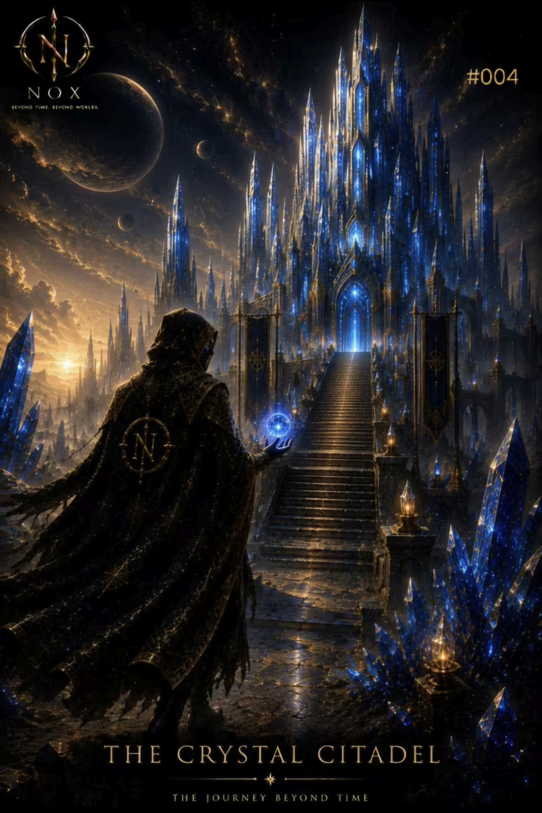
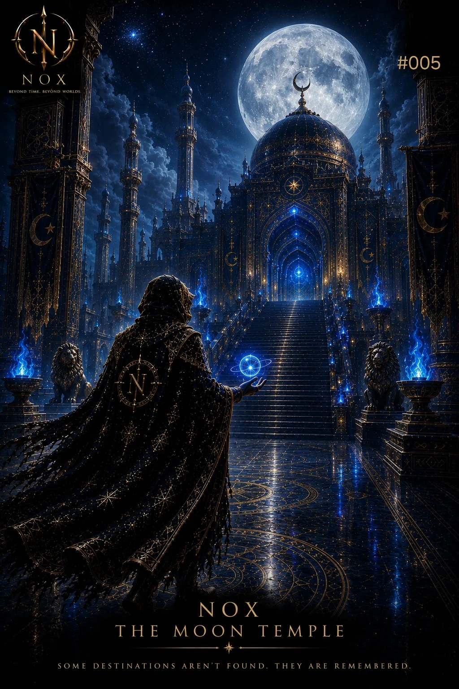
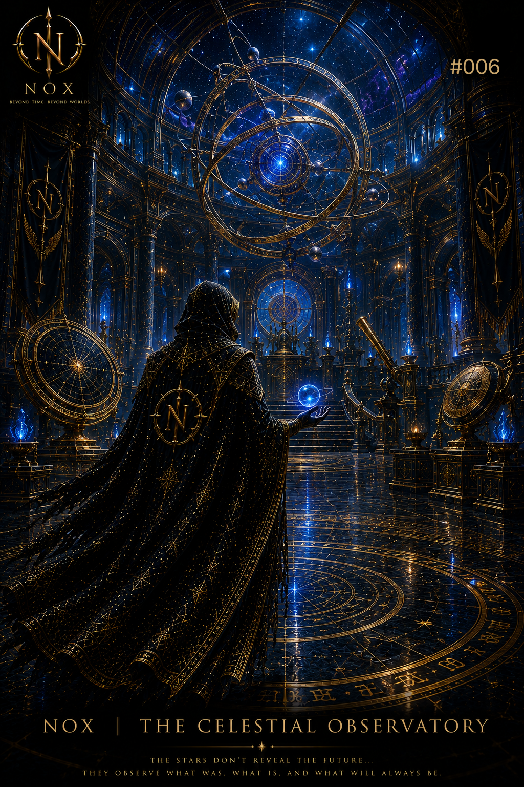
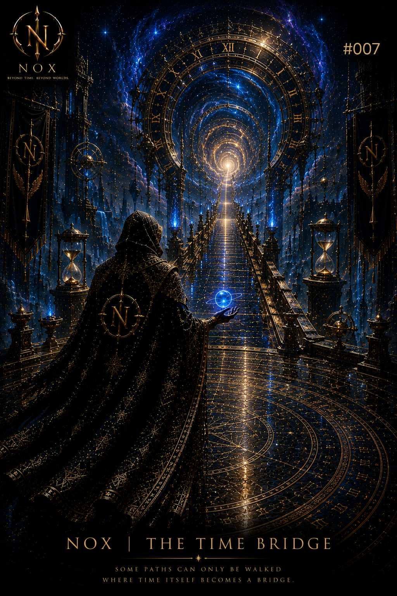
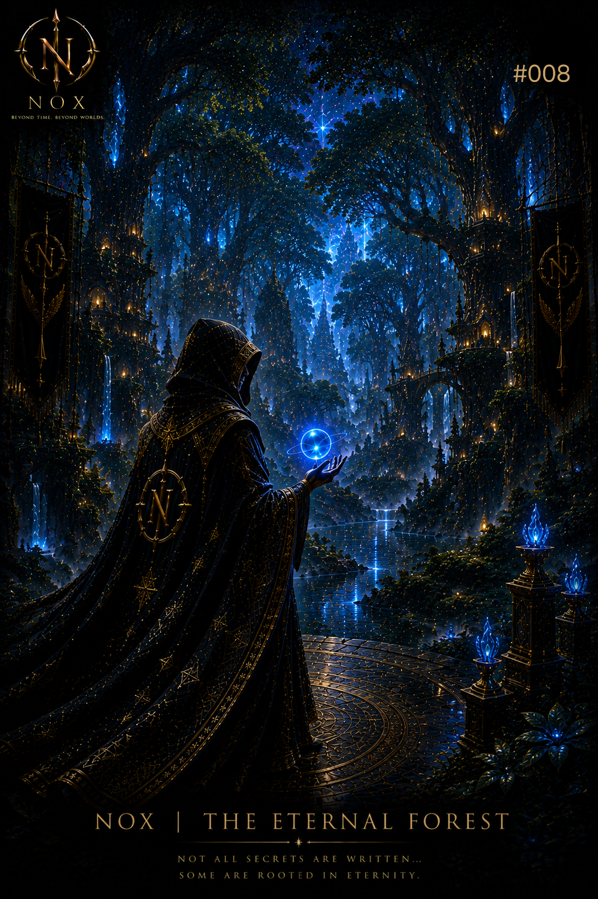
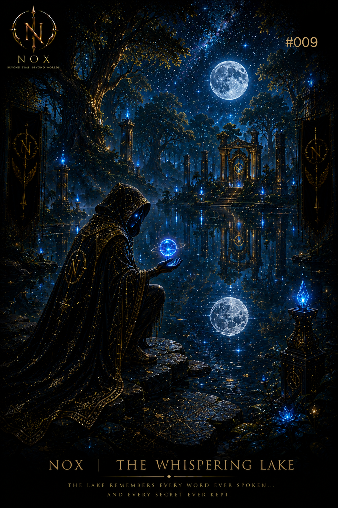

The Story of NOX
The Faceless Guardian
NOX موجودی نیست که در زمان متولد شده باشد. او نگهبان خاطرات، تمدنهای فراموششده و جهانهایی است که حتی نامشان نیز از تاریخ پاک شده است. هر NFT بخشی از سفر بیپایان او را روایت میکند.
Read Full StoryThe World of NOX

در قلب شهر کریستالی، جایی که نور و سکوت در هم آمیختهاند، ناکس نخستین نشانههای حقیقت فراموششده را کشف میکند.
مشاهده داستان
در زیر نور ماه جاودان، معبدی فراموششده انتظار نگهبانی را میکشد که بتواند رازهای هزاران ساله را بیدار کند.
مشاهده داستان
در رصدخانهای میان ستارگان، مسیر سرنوشت آشکار میشود؛ جایی که گذشته و آینده در یک نقطه به هم میرسند.
مشاهده داستان
پل زمان تنها برای یک مسافر گشوده میشود؛ نگهبانی که باید میان گذشته و آینده تعادل را حفظ کند.
مشاهده داستان
جنگلی که هرگز پایان ندارد؛ هر درخت، حافظ خاطرات تمدنی است که زمان آن را از یاد برده است.
مشاهده داستان
دریاچهای خاموش که زمزمههای آن تنها برای ناکس قابل شنیدن است؛ هر موج، بخشی از حقیقت را آشکار میکند.
مشاهده داستانNOXVERSE یک جهان سینمایی و هنری است که داستان نگهبانی بیچهره به نام NOX را روایت میکند.
NFT Collection
Main Story
Endless Universe
NOX موجودی نیست که در زمان متولد شده باشد. او نگهبان خاطرات، تمدنهای فراموششده و جهانهایی است که حتی نامشان نیز از تاریخ پاک شده است. هر NFT بخشی از سفر بیپایان او را روایت میکند.
Read Full StoryLaunch NOXVERSE Website
Release 30 NFT Collection
Community Growth
Metaverse Expansion
اولین دروازه... جایی که NOX وارد دنیای فراموششده میشود.
در این لحظه نگهبان بیچهره برای اولین بار قدرت خود را آشکار میکند و سفر او آغاز میشود.